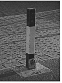
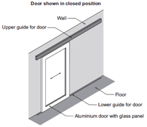

Design Questions
Table of Contents

1 Introduction
- The last question in the exam is normally a multi-part long answer question which requires you to produce a design to solve a specific problem. To score highly, you will be required to independently combine electronics, mechanisms and knowledge of resistant materials.
2 Recap
Past Paper Questions
- Specimen Paper, Q7. A closed circuit surveillance system has a fixed camera. This is a limited system and requires modifying for improved surveillance. The mass of the camera is 10kg.
- (a) With the aid of sketches, show a mechanical system that would be capable of slowly rotating the camera through an angle of 270 degrees. The system should be driven by an electric motor. (8 marks)
- (b) Draw a control circuit that would allow the direction of rotation of the motor to be reversed. The circuit should include a method of automatically reversing the motor when the limits of the camera’s rotation are reached. (10 marks)
- (c) With the aid of sketches, design a system that would make the camera tilt through an angle of approximately 45 degrees. The camera should remain in position when the power source is removed from the tilt system. (6 marks)
- (d) Incorporate your ideas from parts (a), (b) and (c) into a design for a complete system that would allow the camera 270 degrees of rotation and 45 degrees of tilt. Show how this could be mounted on a bracket connected to the corner of a building. Marks will be awarded for:
- Assembly of the sub-systems. (8 marks)
- The design of the bracket. (4 marks)
- Materials and construction. (4 marks)
- 2009, Q9. The photograph below shows a bollard which can be manually moved to allow a vehicle to drive over it. This is a limited system and requires modifying for improved ease of use.

- Height of bollard = 1000 mm
- Cross-section of bollard = 80 mm × 80 mm
- Mass of bollard = 10 kg
- (a) With the aid of sketches, show a mechanical system that would be capable of slowly lowering the bollard into a hole in the ground. The system should be powered by an electric motor. (8)
- (b) Draw a control circuit that would allow the direction of the motor to be reversed. The circuit must include a method of automatically stopping the motor when the bollard is at the limits of its travel. (8)
- (c) With the aid of sketches, design a system that would automatically illuminate four LEDs on the bollard during the hours of darkness. (6)
- (d) Incorporate your ideas from parts (a), (b) and (c) to show how the systems could be connected or arranged to operate as a complete unit. (10)
- (e) Explain any problems that might be encountered in the installation or manufacture of your system. (4)
- (f) List suitable materials for the major parts of your system including the bollard. (4)
- 2010, Q7. The diagram shows a sliding door that is required to open as a person approaches. The door is shown in the closed position.

- (a) With the aid of an annotated sketch, show how a person approaching the door could be detected and an output produced which would be suitable for activating the door control system. (6 marks)
- (b) With the aid of annotated sketches, show a system that would be capable of slowly opening and closing the door. (8 marks)
- (c) With the aid of a diagram, show a control system that would open the door when a person approaches and only close the door when the person has safely passed through. (10 marks)
- (d) Incorporate your ideas from parts (a), (b) and (c) into a design for a complete system that automatically opens the door when a person approaches and only closes it when they have safely passed through. Marks will be awarded for:
- materials and construction (4 marks)
- assembly of the sub-systems. (8 marks)
- (e) With the aid of a diagram, show how the movement system is attached and how it moves the door. (4 marks)
- 2011, Q7. A system is required to automatically monitor the water level and speed of flow of a river.
- (a) With the aid of a diagram, show a sensing system that would produce an electrical output proportional to the water level in the river. (4 marks)
- (b) With the aid of annotated sketches, show two methods of converting the movement of the water in the river into rotary motion. (6 marks)
- (c) With the aid of an annotated sketch, show a system that would be capable of producing an electrical pulse for each rotation of a shaft. (4 marks)
- (d) With the aid of a diagram, show how the number of electrical pulses per minute can be counted and displayed. (10 marks)
- (e) Using this page and the next page incorporate your ideas from parts (a), (b), (c) and (d) into a design for a complete system that automatically indicates the level of the river and displays an output to indicate the speed of flow of the water. Marks will be awarded for:
- materials and construction (4 marks)
- how and where the system is placed in the river (2 marks)
- assembly of the sub-systems (8 marks)
- the indication and display system. (2 marks)
- 2012, Q7. (a) A system is required to automatically monitor and control the temperature in a room. With the aid of diagrams, show two systems that would produce an electrical output of at least 2 volts at 10mA when the temperature exceeds 25°C. (8 marks)
- (b) With the aid of annotated sketches, show two systems for producing 200 mm of linear movement when triggered by an electrical pulse. You should clearly show how the amount of linear movement is limited to 200 mm. (12 marks)
- (c) Using your ideas from parts 7(a) and 7(b), produce a design for a complete system that will automatically open a window by 200 mm when the temperature rises above 25°C and close the window when the temperature falls below 25°C. Your diagram should clearly show a window and window frame. Marks will be awarded for:
- the window and window frame (3 marks)
- how the system is positioned and attached (3 marks)
- the sensing and control system (8 marks)
- assembly of the sub-systems (2 marks)
- selection of materials and components. (4 marks)